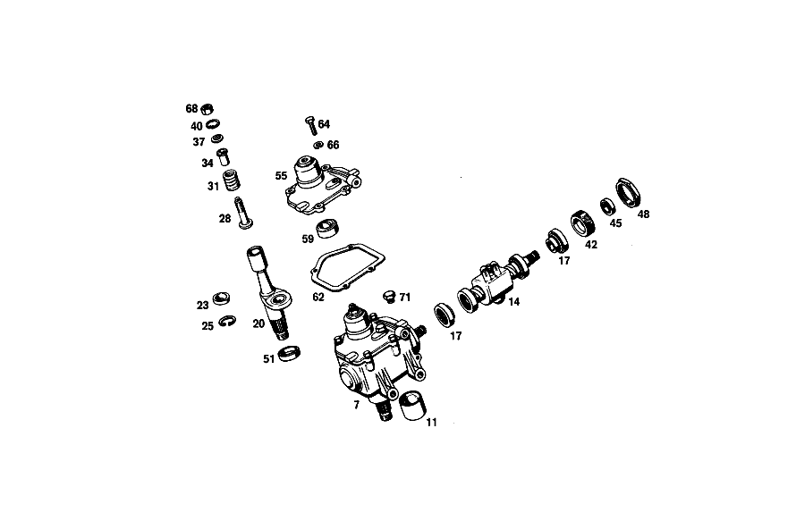

| № | Артикул | Название | Кол. | Примечание | Ограничение |
|---|---|---|---|---|---|
| 77 | A 109 460 06 01 | РУЛЕВОЕ УПРАВЛЕНИЕ | 1 | БЕЗ РУЛЕВОЙ СОШКИ Рулевое управление: Влево [697] ДЕТАЛЬ ПОСТАВЛЯЕТСЯ ТОЛЬКО/ИЛИ ТАКЖЕ КАК ЗАП.ЧАСТЬ | |
| 80 | A 109 460 04 02 | - КОРПУС | 1 | Рулевое управление: Влево | |
| 83 | A 001 997 02 45 | - Уплотнительное кольцо | - | ||
| 83 | A 013 997 36 48 | - УПЛОТНИТ. КОЛЬЦО | 1 | ||
| 86 | A 003 981 18 10 | - ПОДШИПНИК ИГОЛЬЧАТЫЙ | 1 | [402] БОЛЬШЕ НЕ ПОСТАВЛЯЕТСЯ | |
| 89 | A 112 997 00 30 | - Резьбовая пробка | 1 | ||
| 93 | A 000 997 87 20 | - Уплотнительное кольцо | 1 | ||
| 96 | N 007604 010102 | - Резьбовая пробка | - | ||
| 96 | N 007604 010108 | - Резьбовая пробка | 1 | [402] БОЛЬШЕ НЕ ПОСТАВЛЯЕТСЯ | |
| 99 | N 007603 010100 | - Уплотнительное кольцо | 1 | 10X13.5 AL | |
| 102 | A 112 460 28 85 | - ПОРШЕНЬ | 1 | (SERVO PISTON) с STEERING WORM AND SLEEVE VALVE Рулевое управление: Влево | |
| 105 | A 112 460 20 14 | - КРЫШКА | 1 | Рулевое управление: Влево | |
| 108 | A 112 460 00 61 | - Уплотнительное кольцо | 1 | ||
| 111 | A 112 462 01 62 | - ШАЙБА УПОРНАЯ | 1 | ||
| 114 | A 000 994 26 41 | - ПРЕДОХРАНИТЕЛЬ | 1 | ||
| 117 | A 112 461 01 62 | - ШАЙБА УПОРНАЯ | 1 | ||
| 120 | A 000 981 04 18 | - ПОДШИПНИК РОЛИКОВЫЙ | 2 | ||
| 123 | A 000 981 63 10 | - Игольчатый подшипник | 1 | ||
| 126 | A 112 460 03 86 | - РЕЗЬБ. ПАТРОН | 1 | ||
| 129 | A 000 994 26 41 | - ПРЕДОХРАНИТЕЛЬ | 1 | ||
| 132 | A 120 990 05 51 | - Двенадцатигранная гайка | 1 | ||
| 135 | A 108 995 04 20 | - ХОМУТ | 1 | ||
| 138 | A 120 990 05 20 | - болт | 1 | ||
| 141 | A 112 994 00 05 | - Стопорная шайба | 1 | ||
| 145 | A 112 460 34 85 | - ПОРШЕНЬ | 1 | рабочий поршень Рулевое управление: Влево | |
| 148 | A 000 981 46 27 | - РАД.-УПОРН. ПОДШИПНИК | 2 | ||
| 151 | A 001 994 51 41 | - ПРЕДОХРАНИТЕЛЬ | 1 | ||
| 154 | A 000 981 40 27 | - РАД.-УПОРН. ПОДШИПНИК | 1 | ||
| 157 | A 112 466 19 05 | - КРЫШКА | 1 | ||
| 160 | A 112 466 01 34 | - КОЛЬЦО РЕЗЬБОВОЕ | 1 | ||
| 164 | A 112 993 95 01 | - пружина | 2 | ||
| 167 | A 112 466 04 62 | - ШАЙБА УПОРНАЯ | 2 | ПО НЕОБХОДИМОСТИ 1.0 MM [402] БОЛЬШЕ НЕ ПОСТАВЛЯЕТСЯ | |
| 172 | A 000 994 38 41 | - ПРЕДОХРАНИТЕЛЬ | 2 | ||
| 175 | A 112 991 01 41 | - ШТИФТ | 2 | ||
| 177 | A 112 466 02 75 | - ШАЙБА | 2 | ||
| 180 | A 112 993 19 02 | - ПРУЖИНА | 1 | ||
| 184 | A 000 994 54 41 | - ПРЕДОХРАНИТЕЛЬ | 1 | ||
| 187 | N 000933 010105 | - Винт | 4 | ||
| 191 | N 912004 010102 | - Пружинное кольцо | 4 | ||
| 195 | A 000 420 08 55 | - Клапан выпуска воздуха | 1 | Рулевое управление: Влево | |
| 199 | A 000 421 71 87 | - КОЛПАЧОК | - | ||
| 199 | A 000 421 08 87 | - Защитный колпачок | 1 | ||
| 203 | A 109 997 00 30 | - ЗАГЛУШКА РЕЗЬБОВАЯ | 1 | ||
| 208 | A 112 466 11 05 | - КРЫШКА | 1 | ||
| 212 | A 109 466 01 05 | - КРЫШКА | 1 | СВЕРХУ Рулевое управление: Влево | |
| 217 | A 100 997 19 72 | - ШТУЦЕР | 1 | ОБРАТНАЯ МАГИСТРАЛЬ | |
| 221 | N 007603 016401 | - Уплотнительное кольцо | 1 | ОБРАТНАЯ МАГИСТРАЛЬ | |
| 225 | A 100 997 18 72 | - ШТУЦЕР | 1 | НАПОРН. ТРУБКА | |
| 229 | N 007603 018100 | - Уплотнительное кольцо | 1 | НАПОРН. ТРУБКА | |
| 233 | N 915013 010001 | - Штуцер | 1 | ОБРАТНАЯ МАГИСТРАЛЬ | |
| 237 | N 007603 016401 | - Уплотнительное кольцо | 1 | ОБРАТНАЯ МАГИСТРАЛЬ | |
| 242 | N 915013 006002 | - Штуцер | 1 | НАПОРН. ТРУБКА | |
| 245 | N 007603 012110 | - Уплотнительное кольцо | 1 | НАПОРН. ТРУБКА | |
| 251 | A 109 460 02 11 | - ВАЛ РУЛЕВОЙ | 1 | ||
| 255 | A 109 462 01 71 | - болт | 1 | ||
| 259 | A 111 993 21 01 | - ПРУЖИНА | 1 | ||
| 261 | A 111 462 04 85 | - УПОР ПРИЖИМНОЙ | 1 | ||
| 264 | A 111 461 04 62 | - ШАЙБА УПОРНАЯ | 1 | ||
| 268 | A 004 994 92 41 | - предохранитель | 1 | ||
| 272 | A 109 460 02 15 | - КРЫШКА | 1 | Рулевое управление: Влево | |
| 278 | A 000 981 81 10 | - Игольчатый подшипник | 1 | ||
| 282 | A 000 994 53 41 | - Стопорное кольцо | 2 | ||
| 286 | A 112 993 97 01 | - пружина | 1 | ||
| 290 | N 000912 008096 | - Винт | - | ||
| 290 | N 000912 008202 | - Цилиндрич. винт | 6 | M8X25 | |
| 294 | N 000137 008100 | - Пружинная шайба | 6 | ||
| 298 | A 109 466 00 72 | - ГАЙКА | 1 | ||
| 303 | N 007603 010404 | - Уплотнительное кольцо | 2 | ||
| 307 | A 109 990 00 51 | - ГАЙКА | 1 | ||
| 312 | N 000917 010002 | - Гайка | 1 | ||
| 317 | A 109 460 02 61 | набор уплотнений | 1 | ||
| 321 | A 109 997 37 82 | Шланг | 1 | Рулевое управление: Влево | |
| 325 | A 006 997 09 82 | Шланг | 1 | ЗАКАЗЫВАТЬ ПОГОННЫМИ МЕТРАМИ | |
| 330 | A 110 987 05 41 | Кольцо | 3 | ||
| 334 | A 109 460 09 24 | ПРОВОД | 1 | Рулевое управление: Влево | |
| 338 | A 109 466 07 40 | ДЕРЖАТЕЛЬ | 1 | [402] БОЛЬШЕ НЕ ПОСТАВЛЯЕТСЯ | |
| 342 | N 040621 020200 | Изоляционный шланг | 2 | ||
| 347 | A 109 466 08 40 | ДЕРЖАТЕЛЬ | 1 | ||
| 358 | N 000937 022000 | Гайка | 1 | ||
| 372 | A 111 462 01 65 | - втулка | 2 | ||
| 376 | A 111 990 30 40 | - ШАЙБА | 2 | ||
| 381 | N 900055 010002 | - Пружинная шайба | - | ||
| 381 | N 000137 010205 | - Пружинная шайба | 2 | ||
| 385 | A 136 990 95 40 | - ШАЙБА | 2 | ||
| 390 | A 111 990 04 20 | БОЛТ | 2 | ||
| 396 | N 000127 008203 | Пружинное кольцо | 2 | ||
| 400 | N 000931 010253 | Винт | 3 | [402] БОЛЬШЕ НЕ ПОСТАВЛЯЕТСЯ | |
| 406 | N 912004 010102 | Пружинное кольцо | 3 | ||
| 434 | A 115 462 18 35 | Корпус подшипника | 1 | ||
| 439 | A 018 981 61 10 | Игольчатый подшипник | 1 | ||
| 453 | A 116 462 00 60 | Уплотнительное кольцо | 1 | ||
| 458 | N 000625 006004 | Шарикоподшипник | 1 | ||
| 463 | A 094 990 60 05 | Стопорное кольцо | 1 | ||
| 483 | A 094 990 70 05 | Стопорное кольцо | 1 | ||
| 496 | A 009 545 56 28 | Корпус штекера | 1 | ||
| 501 | A 107 464 01 43 | Угольная щетка | 1 | ||
| 505 | A 115 462 13 96 | Манжета | 1 | ||
| 509 | A 000 464 09 28 | КОЛЕСО КОНТАКТНОЕ | 1 | ||
| 517 | A 115 460 08 97 | ЗАЩИТНАЯ ВТУЛКА | - | ||
| 521 | A 115 464 00 17 | Контактное кольцо | 1 | ||
| 525 | N 900055 032200 | Стопорное кольцо | 1 | ||
| 529 | A 116 462 00 96 | Манжета | 1 | ||
| 539 | A 116 460 00 03 | Рулевое колесо | 1 | ||
| 561 | A 115 464 04 15 | Сигнальное кольцо | 1 | ||
| 564 | A 115 464 01 34 | Держатель | 1 | ||
| 567 | N 007987 003122 | БОЛТ | 3 | ||
| 571 | N 000137 008212 | Пружинная шайба | 5 | ||
| 574 | N 000934 008013 | Гайка | 5 | ||
| 579 | N 912004 014100 | Пружинное кольцо | 1 | ||
| 583 | N 000936 014010 | Гайка | - | ||
| 583 | N 308675 014000 | Шестигранная гайка | - | ||
| 583 | N 308675 014002 | Шестигранная гайка | 1 | M14X1.5\-05 | |
| 593 | A 115 464 03 42 | Набивка | 1 | ||
| 614 | A 116 462 00 93 | Переключатель | 1 | ||
| 661 | N 914007 006004 | Винт с неспадающей шайбой | 6 | Рулевое управление: Влево | |
| 661 | N 914007 006004 | Винт с неспадающей шайбой | 5 | Рулевое управление: Вправо | |
| 665 | A 000 990 27 91 | ГАЙКОДЕРЖАТЕЛЬ | - | Рулевое управление: Влево | |
| 665 | A 000 990 22 91 | ГАЙКОДЕРЖАТЕЛЬ | - | Рулевое управление: Влево | |
| 665 | A 001 990 67 91 | Гайкодержатель | 6 | Рулевое управление: Влево | |
| 665 | A 001 990 67 91 | Гайкодержатель | 5 | Рулевое управление: Вправо | |
| 677 | N 000000 003250 | Шайба | 2 | ||
| 681 | N 000127 008203 | Пружинное кольцо | 2 | ||
| 701 | A 110 460 02 05 | Рулевая тяга | 1 | ||
| 706 | A 000 330 04 85 | Ремк-т шарового шарнира | 1 | ||
| 749 | A 111 463 11 40 | Держатель | 1 | Рулевое управление: Влево | |
| 749 | A 111 463 11 40 | Держатель | 1 | Рулевое управление: Вправо | |
| 759 | A 000 463 51 32 | Амортизатор | 1 | (ДЕМПФЕР РУЛ. УПРАВЛ.) | |
| 765 | N 000960 010026 | Винт | - | ||
| 765 | N 000961 010031 | Винт | 1 | ||
| 772 | N 912004 010102 | Пружинное кольцо | 1 | ||
| A 309 460 40 08 | - ЧЕРВЯК РУЛЕВОЙ ПЕРЕДАЧИ | - | [403] НЕ УСТАНОВЛЕНО | ||
| A 109 460 09 01 | РУЛЕВОЕ УПРАВЛЕНИЕ | 1 | БЕЗ РУЛЕВОЙ СОШКИ Рулевое управление: Вправо [697] ДЕТАЛЬ ПОСТАВЛЯЕТСЯ ТОЛЬКО/ИЛИ ТАКЖЕ КАК ЗАП.ЧАСТЬ | ||
| A 109 460 10 02 | - КОРПУС | 1 | Рулевое управление: Вправо [417] БОЛЬШЕ НЕ ПОСТАВЛЯЕТСЯ, ЗАКАЗЫВАТЬ КОМПЛЕКТ ПОСТАВКИ | ||
| A 109 460 01 85 | - ПОРШЕНЬ | 1 | (SERVO PISTON) с STEERING WORM AND SLEEVE VALVE Рулевое управление: Вправо [402] БОЛЬШЕ НЕ ПОСТАВЛЯЕТСЯ | ||
| A 100 460 18 14 | - КРЫШКА | 1 | Рулевое управление: Вправо | ||
| A 000 981 08 10 | - ПОДШИПНИК ИГОЛЬЧАТЫЙ | - | [403] НЕ УСТАНОВЛЕНО | ||
| A 112 460 35 85 | - ПОРШЕНЬ | 1 | рабочий поршень Рулевое управление: Вправо | ||
| A 112 466 05 62 | - ШАЙБА УПОРНАЯ | 2 | ПО НЕОБХОДИМОСТИ 1.1 MM [402] БОЛЬШЕ НЕ ПОСТАВЛЯЕТСЯ | ||
| A 112 466 06 62 | - ШАЙБА УПОРНАЯ | 2 | ПО НЕОБХОДИМОСТИ 1.2 MM [402] БОЛЬШЕ НЕ ПОСТАВЛЯЕТСЯ | ||
| A 112 466 07 62 | - ШАЙБА УПОРНАЯ | 2 | ПО НЕОБХОДИМОСТИ 1.3 MM [402] БОЛЬШЕ НЕ ПОСТАВЛЯЕТСЯ | ||
| A 112 466 09 62 | - ШАЙБА УПОРНАЯ | 2 | ПО НЕОБХОДИМОСТИ 1.4 MM [402] БОЛЬШЕ НЕ ПОСТАВЛЯЕТСЯ | ||
| A 112 466 09 62 | - ШАЙБА УПОРНАЯ | 2 | ПО НЕОБХОДИМОСТИ 1.5mm [402] БОЛЬШЕ НЕ ПОСТАВЛЯЕТСЯ | ||
| A 112 466 10 62 | - ШАЙБА УПОРНАЯ | 2 | ПО НЕОБХОДИМОСТИ 1.6mm [402] БОЛЬШЕ НЕ ПОСТАВЛЯЕТСЯ | ||
| A 112 466 11 62 | - ШАЙБА УПОРНАЯ | 2 | ПО НЕОБХОДИМОСТИ 1.7 MM [402] БОЛЬШЕ НЕ ПОСТАВЛЯЕТСЯ | ||
| A 112 466 12 62 | - ШАЙБА УПОРНАЯ | 2 | ПО НЕОБХОДИМОСТИ 1.8mm [402] БОЛЬШЕ НЕ ПОСТАВЛЯЕТСЯ | ||
| A 112 466 13 62 | - ШАЙБА УПОРНАЯ | 2 | ПО НЕОБХОДИМОСТИ 1.9 MM [402] БОЛЬШЕ НЕ ПОСТАВЛЯЕТСЯ | ||
| A 112 466 14 62 | - Прижимная шайба | 2 | ПО НЕОБХОДИМОСТИ 2.0 MM [409] ПРИ МОНТАЖЕ ПОДОГНАТЬ ПО МЕСТУ | ||
| A 100 460 00 72 | - ВЕНТИЛЯЦИЯ | 1 | Рулевое управление: Вправо | ||
| A 109 466 02 05 | - КРЫШКА | 1 | СВЕРХУ Рулевое управление: Влево | ||
| A 109 466 03 05 | - КРЫШКА | 1 | СВЕРХУ Рулевое управление: Вправо | ||
| A 109 460 03 15 | - КРЫШКА | 1 | Рулевое управление: Вправо | ||
| A 112 466 03 80 | уплотнение | 1 | |||
| A 112 466 01 60 | Уплотнительное кольцо | 1 | |||
| A 001 997 39 40 | Уплотнительное кольцо | 1 | |||
| A 001 997 40 40 | Уплотнительное кольцо | 1 | |||
| A 009 997 72 45 | Уплотнительное кольцо | 2 | |||
| A 000 997 97 45 | Уплотнительное кольцо | 1 | |||
| A 001 997 01 45 | Уплотнительное кольцо | 1 | |||
| A 001 997 25 45 | Уплотнительное кольцо | 5 | |||
| A 001 997 26 45 | УПЛОТНИТ. КОЛЬЦО | - | |||
| A 014 997 61 48 | Уплотнительное кольцо | 1 | |||
| A 002 997 47 45 | Уплотнительное кольцо | 1 | |||
| A 004 997 44 45 | Уплотнительное кольцо | 2 | |||
| A 005 997 58 46 | Уплотнительное кольцо | 1 | |||
| A 005 997 59 46 | Уплотнительное кольцо | 1 | |||
| N 007603 014100 | Уплотнительное кольцо | 1 | 14X18\-AL | ||
| A 109 997 42 82 | ШЛАНГ | 1 | Рулевое управление: Вправо | ||
| N 916026 020001 | Хомут | - | 20\-27 MM | ||
| N 000000 000667 | Хомут | 2 | 23\-30 MM | ||
| A 112 460 10 24 | Разветвитель трубы | 1 | Рулевое управление: Вправо | ||
| A 114 997 02 90 | связующее вещество | - | |||
| A 114 997 05 90 | связующее вещество | 2 | 9X210 MM | ||
| N 000933 006103 | Винт | - | |||
| N 304017 006018 | Винт с 6-гранной головкой | 1 | M6X12 | ||
| A 094 990 68 10 | Пружинное кольцо | 1 | |||
| N 000934 006013 | Гайка | - | |||
| N 304032 006008 | Шестигранная гайка | 1 | для POWER STEERING PUMP AND OIL TANK, SEE GROUP 13 | ||
| A 109 463 07 01 | РЫЧАГ НА РУЛЕВОЙ КОЛОНКЕ | 1 | Рулевое управление: Влево | ||
| A 109 463 08 01 | Рулевая сошка | 1 | Рулевое управление: Вправо | ||
| N 000094 005033 | Шплинт | 1 | |||
| A 115 460 05 10 | Муфта рулевого вала | 1 | |||
| N 912002 010001 | - Механический фиксатор | 2 | |||
| A 111 460 15 26 | ТРУБЧАТ. СЕКЦИЯ РУЛ. КОЛ. | 1 | Рулевое управление: ВлевоКоробка передач | ||
| A 111 460 25 26 | ТРУБЧАТ. СЕКЦИЯ РУЛ. КОЛ. | 1 | Рулевое управление: ВлевоАвтоматическая коробка переключения передач | ||
| A 111 460 22 26 | ТРУБЧАТ. СЕКЦИЯ РУЛ. КОЛ. | 1 | Рулевое управление: ВправоКоробка передач [402] БОЛЬШЕ НЕ ПОСТАВЛЯЕТСЯ | ||
| A 111 460 26 26 | ТРУБЧАТ. СЕКЦИЯ РУЛ. КОЛ. | 1 | Рулевое управление: ВправоАвтоматическая коробка переключения передач | ||
| N 000912 006064 | Винт | 4 | |||
| N 000137 006204 | Пружинная шайба | 4 | |||
| A 111 460 37 09 | ВАЛ РУЛЕВОЙ | 1 | |||
| A 003 545 16 24 | ВЫКЛЮЧАТЕЛЬ АВТОМ. | 1 | Рулевое управление: Влево | ||
| A 003 545 00 24 | ВЫКЛЮЧАТЕЛЬ АВТОМ. | 1 | Рулевое управление: Вправо | ||
| A 009 545 57 28 | - Крышка | 1 | TO 009 545 56 28 | ||
| N 914025 004103 | Винт с неспадающей шайбой | 2 | |||
| A 116 460 00 03 | Рулевое колесо | 1 | |||
| A 115 464 02 01 | Рулевое колесо | - | |||
| A 116 990 01 21 | - болт | 4 | TO 116 460 00 03 | ||
| A 116 993 55 01 | - ПРУЖИНА | 4 | TO 116 460 00 03 | ||
| A 116 993 51 01 | - пружина | 4 | TO 116 460 00 03 | ||
| A 116 464 00 50 | - втулка | 4 | TO 116 460 00 03 | ||
| A 116 464 01 77 | - ЗАЩИТНОЕ КОЛЬЦО | - | |||
| A 601 990 05 40 | - Диск | 4 | TO 116 460 00 03 | ||
| A 116 464 00 77 | - ЗАЩИТНОЕ КОЛЬЦО | 4 | TO 116 460 00 03 | ||
| A 116 990 10 40 | - Диск | 4 | TO 116 460 00 03 | ||
| A 115 464 00 24 | Пробка | 3 | |||
| A 000 462 68 30 | ЗАМОК РУЛЕВОГО УПРАВЛЕНИЯ | - | Рулевое управление: Влево [013] 024,025 FROM CHASSIS 004307 | ||
| A 000 462 80 30 | ЗАМОК РУЛЕВОГО УПРАВЛЕНИЯ | - | Рулевое управление: Влево | ||
| A 116 462 00 30 | ЗАМОК РУЛЕВОГО УПРАВЛЕНИЯ | - | Рулевое управление: Влево | ||
| A 116 462 08 30 | ЗАМОК РУЛЕВОГО УПРАВЛЕНИЯ | - | Рулевое управление: Влево | ||
| A 116 462 10 30 | Замок рулевого вала | 1 | Рулевое управление: Влево | ||
| A 000 462 69 30 | ЗАМОК РУЛЕВОГО УПРАВЛЕНИЯ | - | Рулевое управление: Вправо [013] 024,025 FROM CHASSIS 004307 | ||
| A 000 462 81 30 | ЗАМОК РУЛЕВОГО УПРАВЛЕНИЯ | - | Рулевое управление: Вправо | ||
| A 116 462 01 30 | ЗАМОК РУЛЕВОГО УПРАВЛЕНИЯ | - | Рулевое управление: Вправо | ||
| A 116 462 09 30 | Замок рулевого вала | 1 | Рулевое управление: Вправо | ||
| A 000 462 10 23 | Крышка | 1 | |||
| A 000 462 66 30 | Замковый цилиндр | 1 | |||
| A 000 460 00 04 | - Замковый цилиндр | 1 | БЕЗ ОПРЕДЕЛЕН. ЗАКРЫТИЯ | ||
| A 000 760 04 06 | Главный ключ | 2 | |||
| A 115 460 03 22 | хомут | 1 | |||
| N 000931 006024 | БОЛТ | 1 | |||
| A 094 990 68 10 | Пружинное кольцо | 1 | |||
| A 108 460 02 95 | ПАНЕЛЬ | 1 | Рулевое управление: Влево | ||
| A 108 460 03 95 | ПАНЕЛЬ | 1 | Рулевое управление: Вправо | ||
| N 000931 006159 | Винт | 1 | |||
| N 000125 006407 | ШАЙБА | 1 | |||
| A 094 990 68 10 | Пружинное кольцо | 1 | |||
| N 304032 006008 | Шестигранная гайка | 1 | |||
| A 108 462 02 80 | ПРОКЛАДКА УПЛОТНИТЕЛЬНАЯ | 1 | Рулевое управление: Влево | ||
| A 108 462 03 80 | ПРОКЛАДКА УПЛОТНИТЕЛЬНАЯ | 1 | Рулевое управление: Вправо | ||
| A 111 462 01 75 | Диск | 6 | Рулевое управление: Влево | ||
| A 111 462 01 75 | Диск | 5 | Рулевое управление: Вправо | ||
| N 914112 008012 | Винт | 2 | [402] БОЛЬШЕ НЕ ПОСТАВЛЯЕТСЯ | ||
| A 000 338 02 97 | - МАНЖЕТА | - | |||
| A 000 338 13 97 | - Эластомерная манжета | - | [014] ПО ОТДЕЛЬНОСТИ БОЛЬШЕ НЕ ПОСТАВЛЯЕТСЯ | ||
| A 000 338 10 63 | - Стяжное кольцо | - | СВЕРХУ [014] ПО ОТДЕЛЬНОСТИ БОЛЬШЕ НЕ ПОСТАВЛЯЕТСЯ | ||
| A 000 338 09 63 | - Стяжное кольцо | - | ВНИЗУ [014] ПО ОТДЕЛЬНОСТИ БОЛЬШЕ НЕ ПОСТАВЛЯЕТСЯ | ||
| A 108 463 05 10 | Промежуточный рычаг | 1 | Рулевое управление: Влево | ||
| A 108 463 06 10 | РЫЧАГ ПРОМЕЖУТОЧНЫЙ | 1 | Рулевое управление: Вправо | ||
| N 000960 016287 | Винт | 1 | [402] БОЛЬШЕ НЕ ПОСТАВЛЯЕТСЯ | ||
| N 913004 016004 | Гайка | - | |||
| N 910113 016002 | Шестигранная гайка | 1 | M16 | ||
| A 120 463 02 50 | втулка | 1 | |||
| A 107 463 00 90 | Защитный экран | 1 | Рулевое управление: Влево | ||
| A 107 463 01 90 | ЗАЩИТНАЯ ПАНЕЛЬ | 1 | Рулевое управление: Вправо | ||
| A 111 463 16 40 | ДЕРЖАТЕЛЬ | 1 | Рулевое управление: Вправо | ||
| N 304017 006016 | Винт с 6-гранной головкой | 1 | M6X16 | ||
| A 094 990 68 10 | Пружинное кольцо | 1 | |||
| N 304032 006008 | Шестигранная гайка | 1 | |||
| A 120 990 01 55 | гайка | 6 | |||
| N 000094 002077 | Шплинт | 6 | |||
| A 111 463 10 56 | Пылезащитный колпачок | 1 | |||
| A 111 463 00 52 | РАСПОРНАЯ ШАЙБА | - | |||
| A 124 463 00 77 | Диск | 1 | |||
| N 000960 016287 | Винт | 1 | [402] БОЛЬШЕ НЕ ПОСТАВЛЯЕТСЯ | ||
| N 913004 016004 | Гайка | - | |||
| N 910113 016002 | Шестигранная гайка | 1 | M16 | ||
| A 124 460 00 19 | РЕМКОМПЛЕКТ | - | |||
| A 126 460 08 19 | ремкомплект | 1 | РЕМКОМПЛЕКТ | ||
| N 000960 010026 | Винт | - | |||
| N 000961 010031 | Винт | 1 | |||
| N 912004 010102 | Пружинное кольцо | 1 | |||
| N 000936 010010 | Гайка | 1 |
Позиций: 261 · подписано на схемах: 130 · колесо — плавный зум в курсор, перетаскивание — пан, двойной клик — зум, клик по артикулу — скопировать.